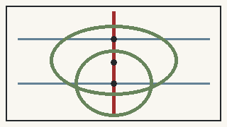

Jing-Zhang People's AI City
AI Advances, People First. People are the civic subjects of the city and AI governance; AI remains explainable, optional, rejectable, subject to human takeover and removable.
Let the lines of technology ultimately flow into the spaces of the people.

Above-the-fold evidence: people-first as a design contract
Space is not an AI showroom

Ordinary service before smart service

BASELINE → AI PILOT → HUMAN REVIEW → PUBLIC RECEIPT → SCALE / REVISE / STOP
12/12 scenarios retain a human or non-AI equivalent. AI may assist but does not independently make final decisions affecting rights, eligibility, safety, payment, access, enforcement or public resources.
Two red anchors, three landmarks
Civic Engineering Hall
The only large red civic landmark: collective engineering history, People's AI Assembly, public algorithm review and open-source city workshop.
People's AI Service Station
Small and replicable, intentionally not a pilgrimage landmark: human service, no-account help, physical credentials, accessibility, review, appeal, water and rest.
Open-Source Origin Square
It must remain a good square with every screen switched off; open tools, contributions, community prototypes and failure reviews enter physical civic space.
Civic Intelligence Arcade
Every public AI demonstration also states who is responsible, the data boundary, what AI may not do and how the same task works without AI.
Status and claim boundary
The overall site and three key areas inherit maintainer provisional geometry. New land-use, road, building, green-space, public-space and scenario geometries are low-confidence conceptual design, not statutory planning, cadastral, ownership, heritage, road-redline, approval or engineering evidence. Full repository formal self-check has not yet been run, so v0.2 must not be described as formal-review-ready.